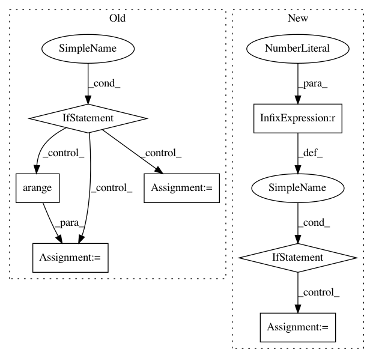

8655560aa19bbde2b5505ed1e8297474f6706872,scipy/optimize/_linprog_rs.py,,_phase_one,#Any#Any#Any#Any#Any#Any#Any#,39
Before Change
basis = basis[basis < n]
// choose additional indices to complete basis
if len(basis) < m:
a = np.arange(m+n)
bl = np.zeros(len(a), dtype=bool)
bl[basis] = 1
new_basis = a[~bl][:m-len(basis)]
basis = np.concatenate((basis, new_basis))
return x, basis, A, b, residual, status, iter_k
def _generate_auxiliary_problem(A, b):
After Change
basis = basis[basis < n]
// if feasible, choose additional indices to complete basis
if status == 0 and len(basis) < m:
basis = _get_more_basis_columns(A, basis)
return x, basis, A, b, residual, status, iter_k
def _get_more_basis_columns(A, basis):
In pattern: SUPERPATTERN
Frequency: 3
Non-data size: 7
Instances
Project Name: scipy/scipy
Commit Name: 8655560aa19bbde2b5505ed1e8297474f6706872
Time: 2018-12-21
Author: mdhaber@mit.edu
File Name: scipy/optimize/_linprog_rs.py
Class Name:
Method Name: _phase_one
Project Name: has2k1/plotnine
Commit Name: b8f8bbb6e8f5480174c4c49445bc0e7d952f3946
Time: 2014-04-25
Author: eric.chiang.m@gmail.com
File Name: ggplot/geoms/geom_abline.py
Class Name: geom_abline
Method Name: _plot_unit
Project Name: NVIDIA/sentiment-discovery
Commit Name: 65c9a4857e41dcde4f5dae8a77e6cdf03953646a
Time: 2018-03-19
Author: raulp@dbcluster.nvidia.com
File Name: model/model.py
Class Name: RNNFeaturizer
Method Name: forward